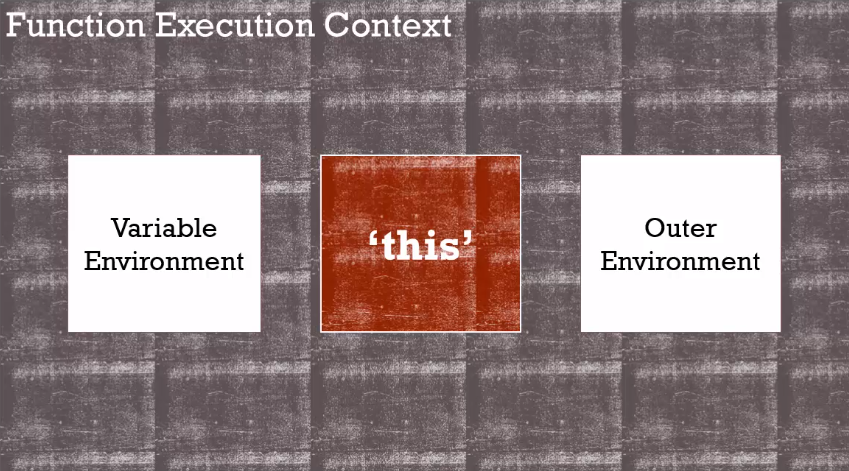
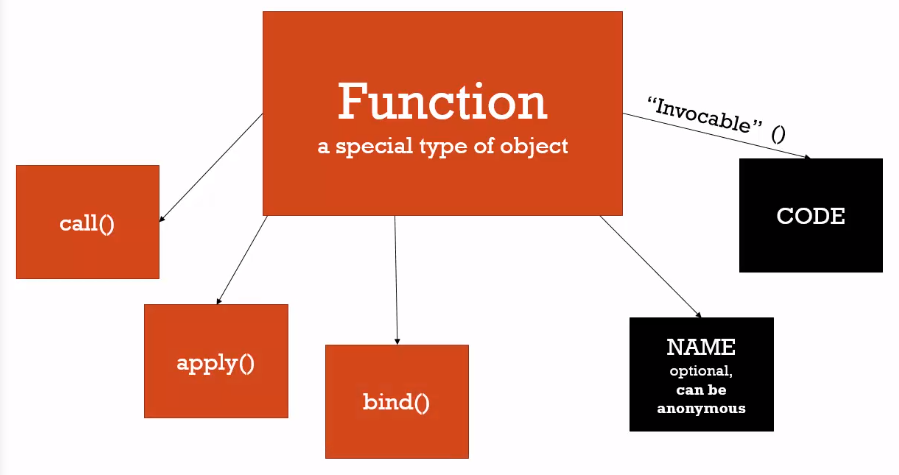
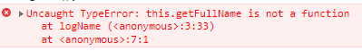

call、bind and apply
這堂課將介紹 3 個很令 JavaSCript 初學者困擾的內建函式 call()、apply() 和 bind()
複習一下之前學過的觀念，在執行一個 funciton 時，會產生一個 Execution Context，並自動生成 Variable Environment、Outer Environment 和關鍵字 this。

另外，函式被建立時還會有以下特性
- 屬性
property- NAME: 如果是
Anonymous Function就不會有 - CODE: 在函式中可被呼叫執行的程式碼
- NAME: 如果是
- 方法
method- 3 個內建函式:
call()、apply()和bind()
- 3 個內建函式:

範例程式碼
接著來看一段範例程式碼如下:
首先，我們建立一個 object，包含一些 property，並透過 method 回傳自己的 property
1 | var person = { |
結果當然會出現 error，因為函式 logName 中的 this 會指向 window，而 window 並不是物件 person，所以沒有 getFullName 這個 method

bind()
那麼如果我們要讓 logName 函式指向物件 person，這時候就可以使用到 bind()，但這裡要注意的是， bind 前的函式 logName 不能加上括號 () 呼叫它，否則就會直接 return 結果了，我們要的只是這個函式 ; 接著 bind 中的參數放入 person，這麼一來在執行新的函式 logPersonName 時，其實就是執行 logName，只是其中的 this 會指物件 person。
1 | var person = { |
然而，我們其實還可以直接在建立函式 (creates a function on the fly) 時，就透過 bind() 來把 this 指向目標物件，並回傳一個 function，直接呼叫這個 function 就會得到和剛才一樣的結果。
1 | firstname: 'John', |
如剛才所說，新建立的函式 logPerson 其實就是執行 logName 函式，所以帶入的參數也會帶入函式 logName 中。
1 | var person = { |
call()
接下來看看透過 call() 我們可以怎麼做。
首先，call() 其實和括號 () 一樣會執行這個 function，但不一樣的是，第一個參數是指向的 this，後續才是帶入的參數。
1 | var person = { |
apply()
而 apply() 的用法就和 call() 就很像了，不同的是，第二個參數是一個 array，array 中的值就是依序帶入的參數了
1 | logName.apply(person, ['en', 'es']); |
而我們也可以透過 IIFE 的方式建立函式 creates a function on the fly
1 | (function(lang1, lang2) { |
Function Borrowing
延續剛才的範例，我們建立第二個物件 person2，但它沒有 getFullName 這個 method，這時候我們就可以透過剛剛學過的 bind()、Call() 和 apply() 來借用 person 的 method。
1 | var person = { |
Function Curring
接著，我們來看一下第二個不同的範例，這個範例將使用到 bind() ; 前面有提到 bind() 只會回傳 function，call 和 apply 則會直接執行 function。
首先，我們建立一個函式並將傳入的兩個變數相乘，接著透過 bind() 來建立第二個函式，但不同的是，透過 bind() 建立時，我們並沒有給足兩個參數
1 | function multiply(a, b) { |
在 bind() 中給的參數其實就會成為新建函式的預設值，剩餘的參數才會在呼叫時補上
1 | function multipleByTwo(b) { |
如果我想要一開始就給足參數的數量，那麼後須呼叫時帶入的參數就不會影響執行的結果了
1 | var multipleByTwo = multiply.bind(this, 2, 3); |
這種先創立一個 function 後，再透過複製並給予預設參數的方式就稱為 Function Curring，實際開發很常應用在大量的算術上。